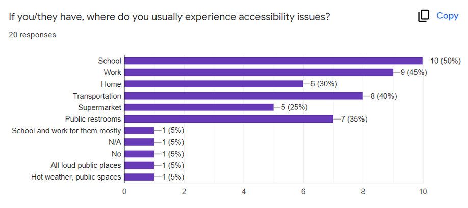
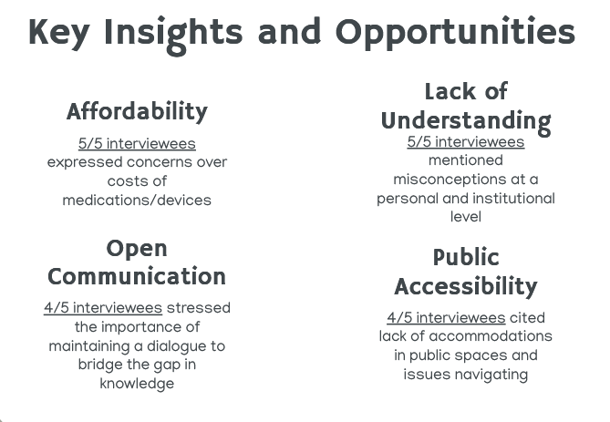
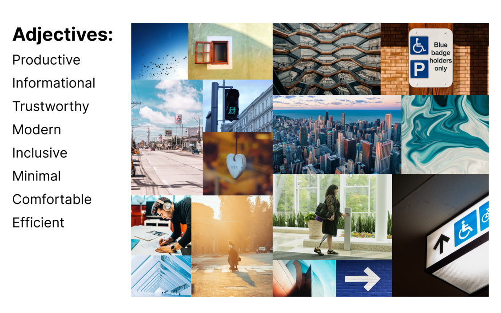

EasyAccess
A startup dedicated to making accessible businesses easier to discover

Duration
9 weeks
Apr - Jun 2022
Role
UI/UX Designer
Team
Katherine Lim, Erica Kuen, Bomed Pham, Sharon Hu
💠"How might we help physically disabled individuals find accessible places more efficiently and reliably?"
Background
According to the World Health Organization, an estimated 1.3 billion people - about 16% of the global population - currently experience significant disability, a number that is increasing as time goes on. As such, it's incredibly important to implement accessible services in both physical and digital contexts so that more people can receive equal treatment regardless of whether they have a disability or not.
However, although many countries, workplaces, and common spaces have put measures in place to assist disabled people and remove barriers they would otherwise face, accessibility is not widely supported everywhere and this lack of support remains a major obstacle to the daily lives of individuals with disabilities.
The Challenge
For UCSD's Startup Studio, our team was challenged to investigate a specific problem within the broad field of accessibility, and design an innovative service addressing it. This included coming up with a prototype as well as writing a business plan.
Our Solution
In the end, we created EasyAccess, a mobile app that allows users to explore and share up-to-date information about the accessibility features and accommodations offered by businesses.
My Role
Over the course of this project, I contributed to all stages of the process, from initial ideation to the final design. I was especially involved in conducting user interviews as well as constructing the final interactive prototype. As a UI/UX Researcher and Designer, I collaborated with my team to complete our milestones and keep our target users in mind for the entire duration of the project.
Discovery
SET Analysis
To start, our team began examining the problem space and searching for a specific issue to focus on through a broad SET (social, economic, technological) analysis. By doing so, we could gain a better overall grasp of current accessibility services/trends and look for potential areas of improvement.
| Social | Economic | Technological |
|---|---|---|
|
|
|
Based on these factors, we came up with several Product Opportunity Gaps:
- Help individuals find more accessible public spaces
- Promote awareness and resources for accessibility
- Aid local businesses with ADA compliance
- Business side: help businesses learn how to improve accommodations
- Customer side: a service that provides accurate and verifiable information about accessibility
Launching our Survey
Having narrowed down our focus a little more, we then began looking for input and insights from people facing accessibility-related issues to better understand the sorts of challenges they frequently face in real life.
We created an online survey and found that:
- 85% of participants have faced or know someone who has faced accessibility issues
- School, work, and transportation are the top places where people experience accessibility issues 
When asked what they wished the general public knew, participants said:
- People with disabilities are people too, who can still do things (they're not incapable)
- Awareness of accessibility options for those that need it
Competitive Analysis
To get a better idea of what kinds of services are already provided in the field of accessibility, we conducted a competitive analysis on some notable applications within our target focus area.

From this analysis, we noticed a couple of recurring problems that could be improved:
- Lack of in-depth accessibility options
- Inability to report inaccuracies/edit reviews
Mission Statement
💡 We aim to provide people who have accessibility issues with the necessary information to live daily life more comfortably.
Understanding our Users
User Interviews
In order to understand our users on a deeper level, we reached out to some survey respondents who indicated that they were open to a brief virtual interview.
We ended up interviewing 5 people, 3 of whom had varying disabilities and needs for accommodation, and 2 who were caregivers of someone facing accessibility issues.
We also created 6 storyboards addressing various scenarios they may face and asked our interviewees to indicate which solutions seemed the most useful, based on their own experience.
The most popular storyboard was the one proposing a way to check the accessible facilities of restaurants/businesses, with 4 out of 5 interviewees viewing it as the most helpful potential solution.
Here's what some of our interviewees had to say:
[It] eliminates having to go out of your way to see if something is accessible… don't need to physically check out the location.
🙷I resonate with this… Often times I want to explore a new building only to find out when I get there that it's not accessible, even when it claims to be.
🙷Value Flow Diagrams
Looking at the situation from a business perspective, we identified a general area of mutual tension between disabled individuals and public institutions/businesses. For those with accessibility needs, there is lack of information regarding whether or not a business provides the necessary accommodations; for businesses, they lose out on potential customers that they might have gained otherwise.

By creating a service to facilitate between the two and allow both sides to contribute information, we can help fulfill present needs from both parties. Users would be able to view/give reviews on facilities provided, and businesses may gain increased customer engagement as well as improve accommodations based on feedback.

Narrowing it Down
Based on our research and understanding of the problem space, we decided to create EasyAccess: a service that aims to provide up-to-date, verified accessibility information about businesses and public institutions.
Explore public spaces, with accessibility guaranteed by real people.
Design and Marketing
Brand Identity
In creating the visual brand and identity of EasyAccess, we had a couple of key ideas we wanted to build around:
- high visual/color contrast, for better readability
- simple, easy-to-read typography for easier readability and compatibility with screen readers
For our color scheme, we decided to use navy blue and orange as our main colors. Blue is a color often associated with calmness and modernity, while orange provides feelings of cheerfulness and a strong visual contrast as blue's complementary color.
Web Probe
Once we had decided on our brand, we needed to gauge how successful our business idea was among our intended users. To do so, we created two different landing pages and advertisements for our service: one geared towards our target users, and one towards businesses owners interested in joining.
We then conducted an A-B test on them to see how each side would perform in terms of internet reach. This would help us obtain a better sense of online demand and inform our approach towards the promotion of our service.
Landing Page Ver. A:
Disabled Individuals
Landing Page Ver. B:
Business Owners
Ad Ver. A:
Disabled Individuals

Ad Ver. B:
Business Owners

Version B ended up performing significantly better than Version A:
Ad Ver. A Results (Google Ads)

Ad Ver. B Results (Google Ads)

Though we hadn't anticipated such a stark difference, we felt there were several reasons for it.
- Version B had a more impactful and relevant headline, that the target audience (business owners) was more likely to search up.
- In comparison, Version A's target audience (people with accessibility issues) is much more niche.
- Though relevant, Version A's keywords were not popular, so they were less likely to be searched up.
Though Version B proved to have a promising amount of interest, we learned that we needed to further improve the way we promote our service by choosing better keywords and emphasizing how our solution differs from others moving forward.
Testing our Concierge MVP
Next, we needed to test out our solution to find out if it helps our intended users the way we have designed it. Once we created our concierge MVP (minimum viable product), we asked two of our prior interviewees to test it out and give their honest opinions on the service.

We created a low-fidelity prototype of EasyAccess as our MVP and conducted Zoom calls with our two volunteers. For each one, we presented a scenario related to finding accessible places and walked through our prototype to show how it would be used to find a solution. Lastly, we asked for their thoughts on our app and whether or not they see it as viable.
2/2 volunteers:
- found the application useful and helpful
- mentioned they would use the application
- mentioned that not many places provide accessibility reviews, making it unique
[T]he application would help third world countries or other places less familiar with accessibility learn more about accessibility and its importance.
🙷Our interviewees also provided some helpful suggestions:
- Account for different wheelchair sizes
- Include more accessibility options
- Consider adding search bar to the filter
🔨 This section is currently under construction, stay tuned!
Final Thoughts
Next Steps
Given the time to further develop EasyAccess, we would like to:
- Revise and update our budget and growth model using revenue from our Kickstarter pledges
- Initiate alpha and beta tests on our current Hi-Fi prototype to receive feedback and refine it
- Conduct additional in-depth market research on common accessibility options that people look for within businesses/public institutions
- Work with business owners to find additional ways to support their business through our app
Reflection
Working on this project taught me a lot, both about the experiences of people with disabilities today and of the design process in the context of creating a business service from scratch. In the beginning, we spent a lot of time getting acquainted with the broad area of accessibility and the challenges of individuals with these issues so that our solution would be both relevant and useful for them. For me, it highlighted the importance of giving our care and attention to people whose needs often go unnoticed, and making an effort to help make their daily lives easier without being disrespectful.
At the same time, constructing a start-up service was no easy task - the conditions of this situation forced us to stay practical and reasonable with our model. This is the first time that I've had a look at a design issue through a business perspective and while a lot of the process was very new to me, it gave me a more realistic taste of what it entails to create a start-up with limited resources.
Finally, a huge thank-you to my teammates, Erica, Bomed, and Sharon for their work in bringing this project to life!